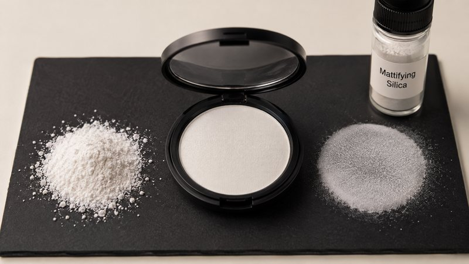

Matte level and skin feel are governed by different properties. Oil absorption at 220-270 g/100g (ISO 4652) sets sebum control, while particle size at D50 3-8 µm (ISO 13320) and particle shape set spreadability and blur. A finish turns cakey when oil absorption is raised to compensate for a particle size that is too coarse.
Oil control is an absorption effect. Porous silica takes up sebum as it reaches the skin surface, so the specular shine that develops through the day is suppressed. The controlling property is accessible pore volume, expressed in practice through oil absorption, and the effect scales with how much sebum the particle can hold before it saturates.
Soft focus is an optical effect and depends on how light is scattered, not on how liquid is absorbed. Particles in a size range close to the wavelength scale of visible light scatter light diffusely, softening the appearance of fine lines and pores rather than producing the flat, powdery look of a purely absorbent filler. Particle size distribution and particle shape control this; oil absorption does not.
Because the two effects have different physical origins, they can be specified independently — and that is what makes a matte finish that still looks like skin achievable rather than a compromise.
A cakey finish is usually the result of solving a spreadability problem with the wrong lever. When a filler is too coarse, the powder drags on application and the formulator raises the loading or moves to a higher-absorption grade to improve the visual matte result. That combination removes not only surface sebum but the residual emollient that gives the film its slip, and the finish reads as dry.
Particle size is the more effective lever. A grade at D50 3-8 µm with 45 µm sieve residue at or below 0.03% (ISO 2591-1) spreads without perceptible drag, so the target matte level can be reached at a lower loading and the emollient phase is left intact. The very low oversize specification matters disproportionately here, because a small number of coarse particles is enough to be felt during application even when the bulk of the distribution is fine.
Batch-to-batch consistency in particle size is the second factor. A filler whose distribution drifts between lots will shift both spreadability and matte level, and the reformulation work that follows is usually attributed to the formula rather than to the raw material.
| Property | Unit | VS-P200 Personal Care | Test method | Why it matters on skin |
|---|---|---|---|---|
| Oil absorption (DOP) | g/100g | 220 – 270 | ISO 4652 / DIN 53617 | Sebum uptake capacity; sets the matte duration |
| Particle size D50 | µm | 3 – 8 | ISO 13320 | Controls spreadability, drag and the soft-focus effect |
| Sieve residue (45 µm) | % | ≤ 0.03 | ISO 2591-1 | Oversize fraction perceptible as grit during application |
| BET specific surface area | m²/g | 180 – 240 | ISO 9277 / DIN 66131 | Accessible surface for sebum and for active adsorption |
| Tapped density | g/L | 150 – 220 | ISO 697 | Affects pressed-powder compaction and payoff |
| pH (5% aq. suspension) | — | 6.5 – 7.5 | ISO 6588 | Near-neutral; compatible with skin-contact formulations |
| SiO₂ content (dry basis) | % | ≥ 98.5 | Gravimetric / XRF | Purity relevant to leave-on cosmetic applications |
State the intended oil-control duration and the intended finish — flat matte, satin or blurred — as two independent targets. Formulations that specify only "matte" tend to converge on high loadings of absorbent filler and a dry result.
A grade at D50 3-8 µm (ISO 13320) with oversize held at or below 0.03% on 45 µm (ISO 2591-1) applies without drag. Fixing spreadability first means the matte level can be reached at a lower loading.
Oil absorption at 220-270 g/100g (ISO 4652) determines how long the matte effect persists as sebum is produced. Increasing it to intensify the initial matte appearance is the step that most often produces a cakey finish.
Gloss measurement captures matte level but not drag, payoff or the perception of dryness. A small blind panel against the incumbent formulation identifies skin-feel regressions that instrumental testing does not.
Request particle-size distribution data per lot. Batch-to-batch variance in distribution shifts both spreadability and matte level, and it is the most common cause of reformulation work that appears to have no formulation cause.
System: Cushion foundation, powder-phase filler · Grade: VS-DC300
Problem. A soft-focus filler was needed for cushion foundations without a heavy, cakey finish, and batch-to-batch particle-size variance from the incumbent supplier was disrupting formulation work.
Action. A spherical silica at 5-7 µm was introduced as the sole powder-phase filler, with three pre-formulation samples supplied with particle-size-distribution certificates so stability testing could run within the same month.
Result.
Duration is governed by how much sebum the filler can absorb before saturating, which is expressed through oil absorption. A grade at 220-270 g/100g (ISO 4652) holds more sebum per unit mass than a low-absorption filler, so the matte effect persists longer through the day at the same loading.
A cakey result usually comes from compensating for poor spreadability with higher absorption or higher loading. Both remove residual emollient along with surface sebum. Correcting particle size — typically to D50 3-8 µm with very low oversize — allows the same matte target at a lower loading and preserves slip.
No. Oil control is an absorption effect governed by pore volume and oil absorption. Soft focus is an optical effect governed by particle size distribution and shape, which determine how diffusely light is scattered. The two can be specified independently, which is what allows a matte finish that still looks like skin.
Related: Personal care solution overview · Full grade specifications · All articles